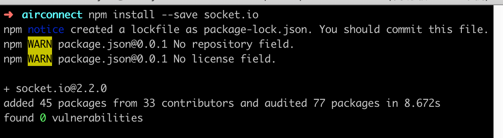
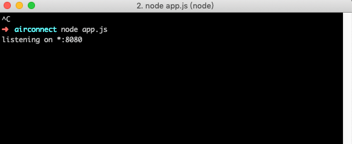
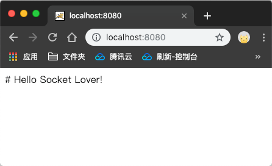
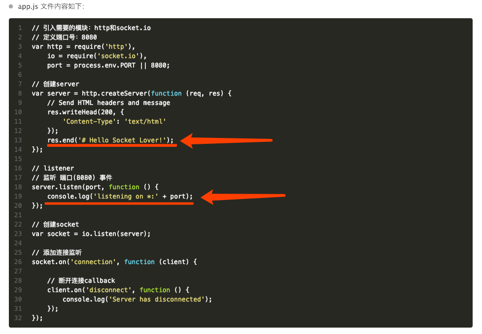

使用socket.io和node.js搭建websocket应用

# 介绍
使用流行的 Web 应用程序堆栈（如 LAMP（PHP））编写聊天应用程序一直非常困难。它涉及轮询服务器以进行更改，跟踪时间戳，并且它比它应该慢得多。
传统上，套接字是大多数实时聊天系统所构建的解决方案，在客户端和服务器之间提供双向通信通道。
这意味着服务器可以将消息推送到客户端。每当您编写聊天消息时，其想法是服务器将获取它并将其推送到所有其他连接的客户端。
参考官方文档socket.io：https://socket.io/get-started/chat/
下面是我个人理解的简易版：
# Web 框架
1.新建文件夹
新建一个文件夹 airconnect（文件夹名称自定义）。
- 终端运行：
1 | $ mkdir airconnect |
2.新建文件
在 airconnect 文件夹下，初始化文件 package.json。
- 终端运行：
1 | $ cd airconnect |
3.安装 socket.io 模块。
在
airconnect文件夹目录路径下
- 终端运行：
1 | $ npm install --save socket.io |
截图：

没有报错就是安装成功！（ WARN 的原因是有一些配置没添加，无所谓，我们现在只做简易版的。 ）
4.在 airconnect 文件夹下，新建一个文件 app.js。
app.js文件：
https://gitlab.com/snippets/1795935app.js 文件内容如下：
//创建 server
var server = http.createServer(function (req, res) {
// Send HTML headers and message
res.writeHead(200, {
‘Content-Type’: ‘text/html’
});
res.end(‘# Hello Socket Lover!’);
});
// listener
// 监听 端口(8080) 事件
server.listen(port, function () {
console.log(‘listening on *:’ + port);
});
// 创建 socket
var socket = io.listen(server);
// 添加连接监听
socket.on(‘connection’, function (client) {
// 连接成功则执行下面的监听
client.on('message', function (event) {
// Received message from client!
console.log('message', event);
socket.emit("message", event);
});
client.on('data', function (event) {
// Received data from client!
console.log('data', event);
socket.emit("data", event);
});
// 断开连接callback
client.on('disconnect', function () {
console.log('Server has disconnected');
});});
1 | </div> |
截图：

- 如果您将浏览器指向 http://localhost:8080：
截图：

对应的输入 log:

输出正确的 log，就是运行成功！
# 提供 HTML
page1.html文件：
https://jsbin.com/zaxida/1/edit?html,console,output
page2.html文件：
https://jsbin.com/meyopov/2/edit?html,console,output
# 实现通讯

- 视频演示地址：
https://pan.baidu.com/s/1mKQu6P10lT331CvkJGWuLg
说明：
第一步：
打开终端，在 airconnect 文件夹目录路径下，运行命令： node app.js
1 | $ node app.js |
检查：在浏览器标签页中，打开 http://localhost:8080，查看正确的 log 信息是否显示。
第二步：
在浏览器标签页中，分别打开 page1.html 和 page2.html 文件。
- 可以手动拖拽到浏览器标签页中
- 或者鼠标双击本地文件，将自动在浏览器标签页中打开
第三步：
在 page1.html 输入框中输入任意文本，测试 page2.html 是否能正确接收到 page1 发送的信息。
设置 服务器地址 和 端口号 8080
socket = io.connect(‘http://localhost:8080')
接收 message 字段名发送的消息
socket.on(‘message’, function (json) {})
接收 data 字段名发送的消息
socket.on(‘data’, function (json) {})
端口号
8080，可以自定义。message和data字段名，可以自定义。
# 结语
以上就完成了使用 socket.io 和 node.js 搭建 websocket 应用。